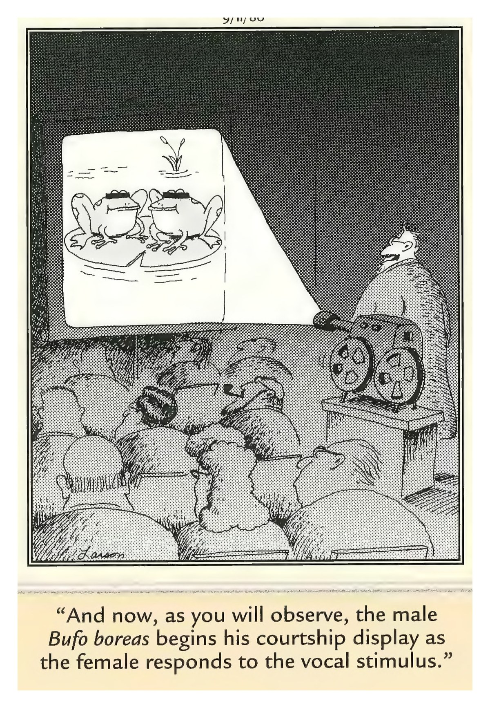

Your Daily Computer Brief
🔴 ALERT
A text message arrives: "Your package couldn't be delivered. Click here to reschedule: [link]." Or an email: "USPS/UPS/FedEx delivery failed — confirm your address." The link goes to a fake login page that steals your email password or credit card. This wave is hitting hard right now because holiday shopping season means more real packages — and crooks know you're expecting deliveries. What to do: Don't click the link. If you're expecting a package, go to the carrier's real website (type usps.com, ups.com, or fedex.com yourself) and enter the tracking number there. Or call the number on your receipt. Real carriers never ask for your email password or credit card to "reschedule." I've had two customers this week who clicked one of these on their phone, then logged in on their computer — and the crooks had their email password within minutes. One lost access to their banking because the same password was reused. Source: FTC Consumer Alert — "Fake shipping notifications" (October 2026); AARP Fraud Watch Network — "Package delivery scams surge ahead of holidays" (October 2026); Malwarebytes Labs — "Smishing kits targeting USPS/UPS/FedEx" (October 2026)
Today in Tech
- Microsoft quietly extended Windows 10 consumer security updates through October 12, 2027 — a full year longer than previously announced. If you're on Windows 10, you'll keep getting security patches. You still need to enroll in the free Extended Security Updates program when prompted. (Source: Windows Latest / Microsoft — June 2026, confirmed October 2026)
- The FTC shut down 19 fake FTC websites (like "FTC-Support.org" and "ftcfederal.org") and won over $80 million back for consumers from imposter scams since 2024. Imposter scams remain the #1 reported fraud category. (Source: FTC.gov — October 29, 2026)
- Gigabit fiber is spreading across rural North Florida — electrical co-ops are building middle-mile infrastructure that lets local ISPs bring high-speed internet to underserved areas in our 14-county region. Check the North Florida Broadband Authority map to see if your street is next. (Source: NFBA / Capital Analytics Associates — May 2026)
Daily Tip
Press the Windows key + Shift + S. Your screen dims and you can drag a box around exactly what you want to capture. The screenshot copies to your clipboard — just paste it into an email, document, or chat. No extra programs needed. Works on Windows 10 and 11.
😄 COMEDY BREAK
